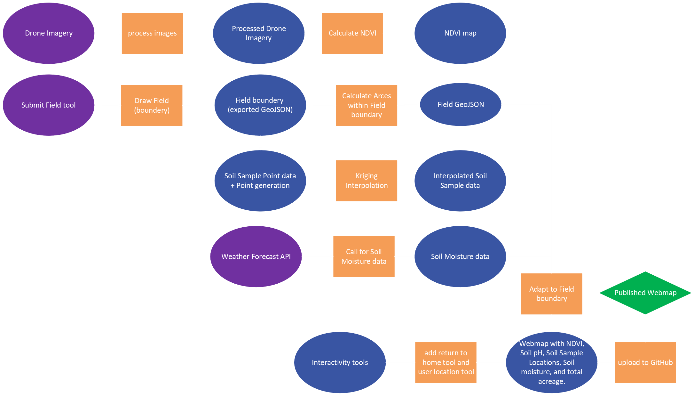

What is This?
The purpose of this project is to give a farmer an aerial overview of their cropland.
This page uses Soil Sampling, Drone imagery, and internet API (Application Programming Interface) to create a deeper understanding of cropland.
These advanced practices reduce crop scouting time by providing a simplified assessment and visual of favorability.
Where to Start?
- Start by selecting the "Submit a Field" in the navigation bar.
- This will bring you to a site where you can create a polygon around a single cropland using the tools on the left hand side of the screen.
- After creating your field polygon you can select finish also found on the left.
- Then a pop-up will appear asking you to name your selected field.
- The created polygon is now downloaded with your given name.
- Next you would send that downloaded file to me then I would perform my services.
- Soil Sampling
- Drone Imagery/Analysis
- Cropland Service Recommendations
- These services will be found and uploaded as individual fields.
- Your field (once uploaded) can be found within the "Home" or "Properties" tab.
- Soil sample data, Drone imagery/analysis, soil moisture and field size (acres) will all be determined and presented within the individual field page.
What to do with this Information?
To fully understand the functionality of your cropland you must know what is currently happening.
Soil Sample data will show chemical necessities within your soil - allowing you to plan and adjust based on chemical needs.
Drone imagery will be taking throughout the growing season - this provides an up-to-date bird eyes view of your cropland.
Drone NDVI (Normalized Difference Vegetation Index) analysis will show plant health through a invisible near-infrared spectrum of light - providing a advanced approach to crop scouting and early detection.
Soil moisture data and field area (acres) will be present for the entire field.
Data Credits:
Soil Moisture Weather API
- This is the source of soil moisture data
Methods
- Collect/gather data - Drone Imagery, Soil Sample data, Soil moisture data, and use "Submit Field" tool to gather GeoJSON
- Start processing drone imagerying to collect NDVI
- Bring Drone Imagery product, GeoJSON, and Soil Sample data into ArcGIS Pro
- Clip Drone Imagery to GeoJSON Field Boundary
- Use GeoJSON and fishnet tool to generate Soil Sample locations
- Join Soil Sample locations to Soil Sample data
- Export rasters and vectors into a folder and upload the files to GitHub
- Update coordinates for Soil Moisture API

Limitations:
Processing large raster files such as NDVI take time and cannot be supported by GitHub (file size limited to 25MB).
I will need to learn more about cloud storage and fetching to fully demonstrate this idea. This project also relies on ArcGIS Pro and Pix4D
for processing data. Without these softwares the dataset would not be complete.
Author Credits:
Webmap made by: Andrew Sayles
Basemap Attributions:
'Tiles © Esri — Source: Esri, i-cubed, USDA, USGS, AEX, GeoEye, Getmapping, Aerogrid, IGN, IGP, UPR-EGP, and the GIS User Community'
'Tiles courtesy of the U.S. Geological Survey'
Questions Regarding this Webpage?
Contact me at: andrewsayles76@gmail.com